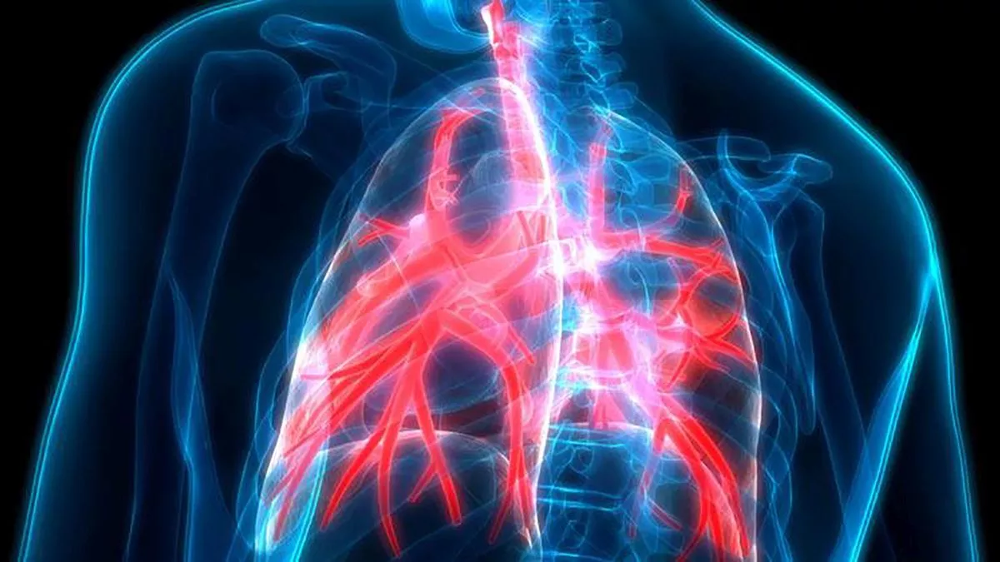
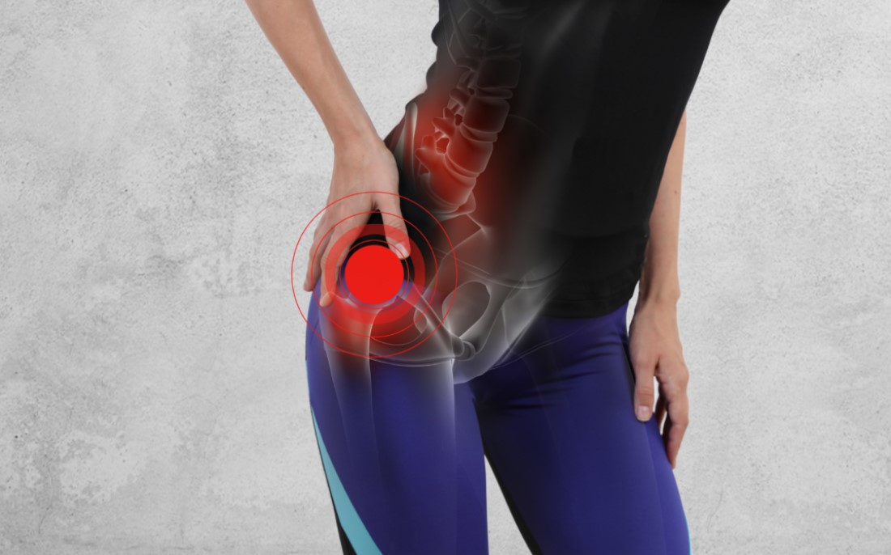

La bronquitis es la inflamación de los conductos bronquiales, las vías respiratorias que llevan oxígeno a sus pulmones.
También causa dificultad para respirar, jadeo y presión en el pecho(...).

La bursitis es la inflamación dolorosa de las bolsas sinoviales. Las bolsas (bursas) son sacos llenos de líquido que amortiguan los tendones, ligamentos y músculos.
Cuando funcionan normalmente, las bolsas ayudan a que los tendones, ligamentos y músculos se deslicen suavemente sobre el hueso(...).

Marta Nadal Herraiz y Jazmín Ramírez Agudelo
©Copyright. Todos los derechos reservados. 2022
Puedes volver a la página principal, haciendo click en logo o a través del siguiente enlace:aquí
También le puede interesar: UAlicante